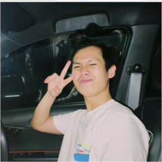
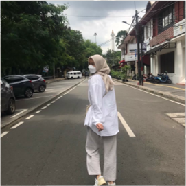

Our Story
We are two souls met by coincidence. If the saying goes “right person wrong time”, then this relationship would be “right person, right time”. We share memories together through happiness and sadness. People wonders why can we stay for so long, the answer to those who ask is “acceptance”.
People thought they need the copy of themselves to be their significant other, but the real answer is they need someone who can cover their weakness, which means they need someone who is the opposite of themselves to complete each other.
Thoughts of parting may came to our mind, when our souls are cloudy but like the river after the flood, it takes time to make the water clear again as crystals, so did to our mind. Times heals our wound and so it saves our connection from one antoher.
“Never lie, steal, cheat, or drink. But if you must lie, lie in the arms of the one you love. If you must steal, steal away from bad company. If you must cheat, cheat death. And if you must drink, drink in the moments that take your breath away”
Will Smith

Him
Name : Farrel Mustafa
DoB : 10th November 2001
Fav. Color : Teal & Dark Blue
Fav. Food : Anything!!
Future Job : Data Analyst

Her
Name : Aricka Pratiwi Koesdinar
DoB : 16th August 2002
Fav. Color : Pastelle, Brown, Grey, & Black
Fav. Food : Es Batu, Es Krim, McD, Cimol, Cilung, & telor gulung
Future Job : Data Analyst
